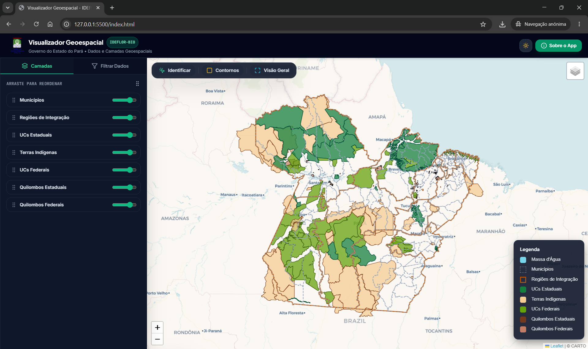
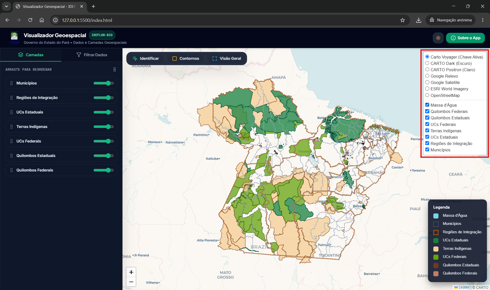
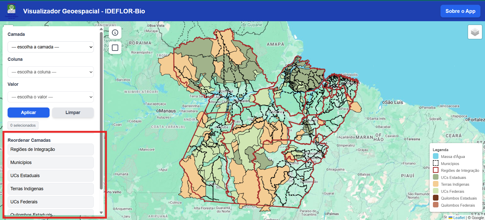
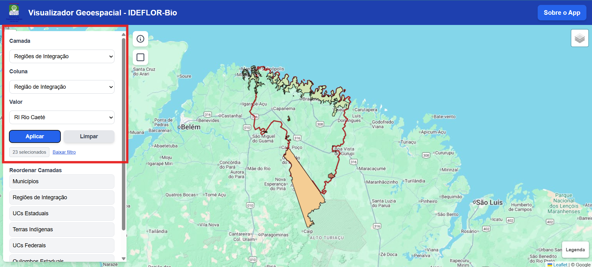
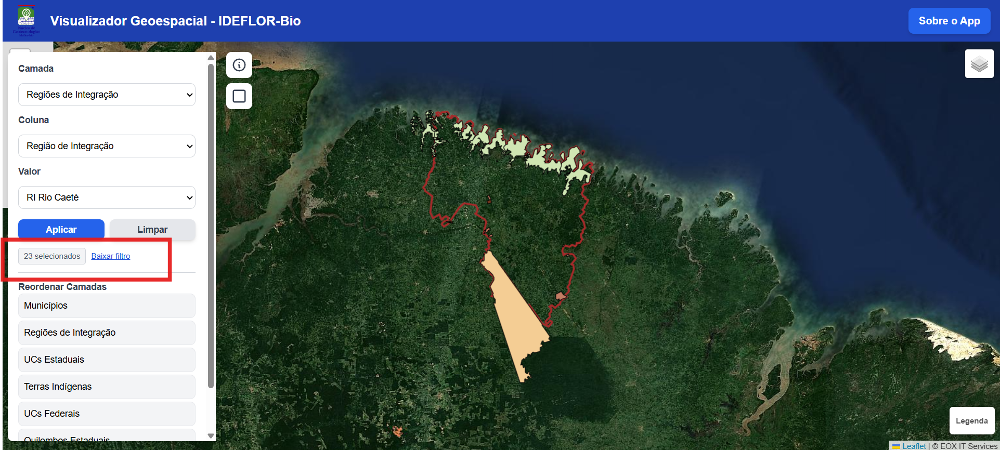
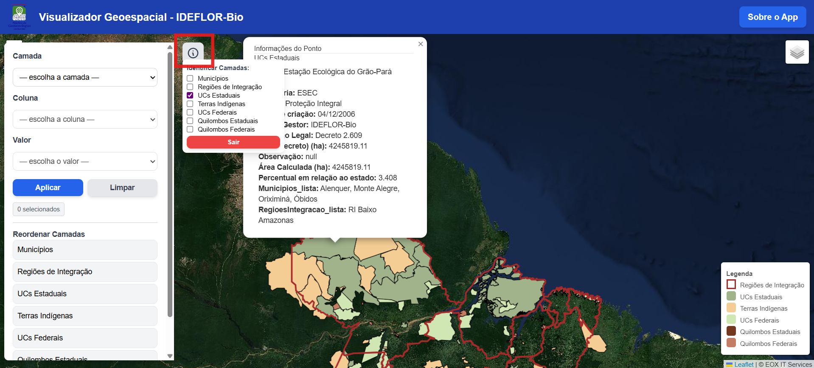
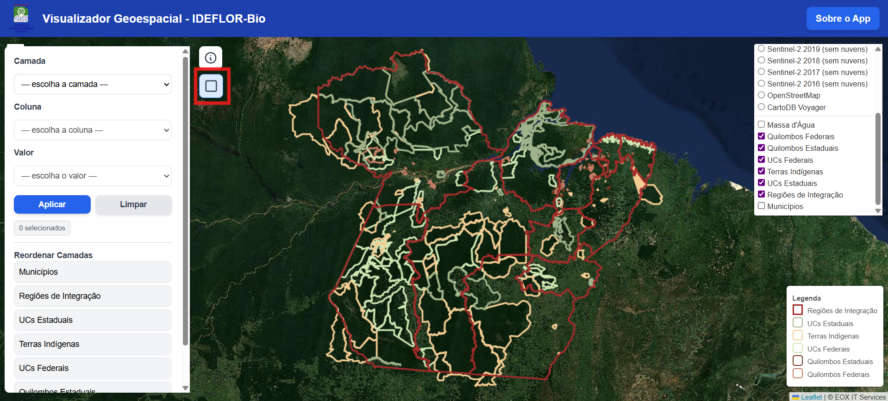
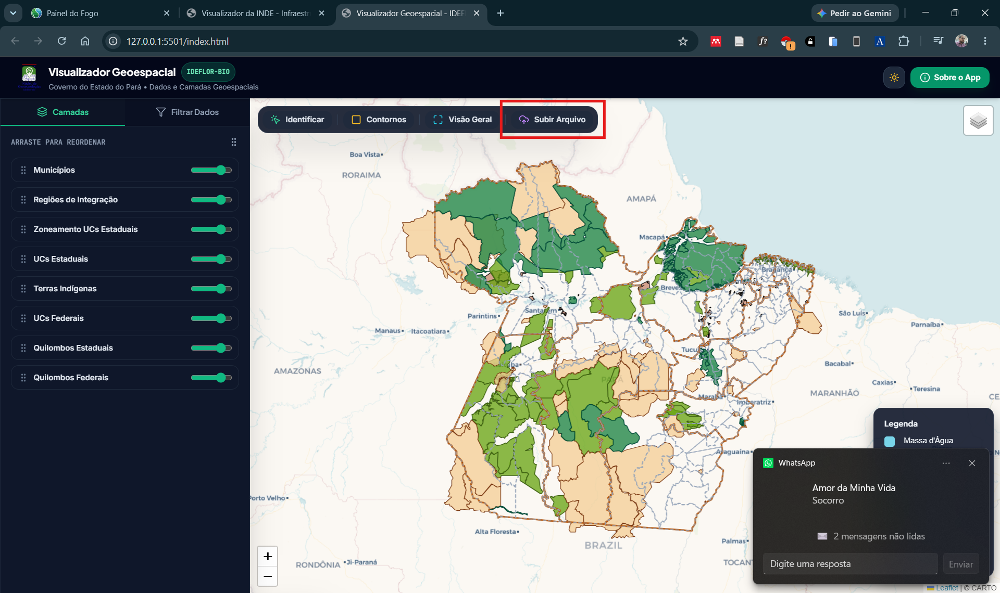
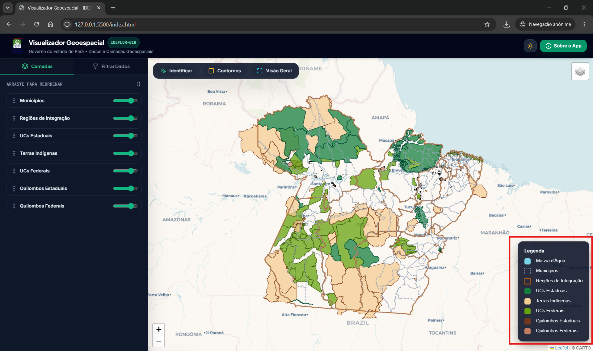

Visualizador Geoespacial
Documentação Oficial do Aplicativo WebGIS — IDEFLOR-Bio
Visão Geral
O Visualizador Geoespacial do IDEFLOR-Bio é uma plataforma de WebGIS desenvolvida para simplificar a visualização, cruzamento e análise espacial das Áreas Protegidas e Limites Territoriais do Estado do Pará. O portal reúne em um único ambiente interativo informações sobre Unidades de Conservação Estaduais e Federais, Terras Indígenas, Territórios Quilombolas, Regiões de Integração, Limites Municipais e Hidrografia.

Funcionalidades Principais
Seletor de Camadas & Controle de Opacidade
Permite ativar ou desativar individualmente cada camada de informação geográfica do Estado do Pará. Cada camada possui um slider de transparência ajustável (0% a 100%), permitindo sobrepor imagens de satélite e analisar contornos inferiores com precisão.

Reordenação Interativa (Drag-and-Drop)
O painel de camadas possui suporte a reordenação por *drag-and-drop* (baseado em Sortable.js). Arraste qualquer camada para cima ou para baixo para alterar a ordem de renderização no mapa e definir qual polígono se sobrepõe aos demais.

Filtro por Atributos & Download GeoJSON
Permite filtrar feições de forma precisa escolhendo a Camada, Coluna e Valor específico. O sistema contabiliza automaticamente a quantidade de itens encontrados e ativa o botão de download direto em formato **GeoJSON**. Ao filtrar por Município ou Região de Integração, o mapa calcula automaticamente todas as UCs, Terras Indígenas e Quilombos sobrepostos naquele território.


Ferramenta de Identificação (`Identify`) com Balão Ancorado
Ao ativar a ferramenta de identificação e clicar em qualquer ponto do mapa, um **Balão Popup ancorado** (`z-index: 99999`) exibe instantaneamente a tabela de atributos de todas as feições visíveis naquele ponto. A ferramenta possui um menu de seleção rápida para escolher exatamente quais camadas devem ser consultadas.

Modo Contorno (Outline)
Ao acionar o botão 'Modo Contorno', todas as camadas de polígono removem seu preenchimento opaco e passam a exibir linhas de contorno vazado mais espessas com as cores originais da camada. Essa função é ideal para análise de limite sobre imagens de satélite.

Carregar Vetor Próprio (Shapefile .zip, KML, GeoJSON)
Com a nova ferramenta Subir Arquivo na barra flutuante, os usuários podem carregar localmente no navegador seus próprios arquivos geoespaciais em formato Shapefile (em .zip), KML ou GeoJSON. O processamento ocorre 100% no lado do cliente (sem necessidade de servidor backend), sendo perfeitamente compatível com hospedagens estáticas como o GitHub Pages. O mapa realiza enquadramento automático (*flyToBounds*) na área carregada e insere o vetor na legenda, identificador e lista de reordenação.

Zoneamento das UCs Estaduais
Camada detalhada com os zoneamentos do Plano de Manejo das Unidades de Conservação Estaduais do Pará. Por padrão, a camada é disponibilizada desligada na inicialização para manter a agilidade da aplicação, podendo ser ativada a qualquer momento pelo Seletor de Camadas. A simbologia é categorizada dinamicamente (Zona de Preservação, Conservação, Amortecimento, Uso Moderado, Uso Intensivo, Produção e Recuperação), respeitando tanto o modo preenchido quanto o modo contorno.
Centro de Treinamento Agroflorestal (IDEFLOR-Bio)
Mapeamento delimitado do Centro de Treinamento Agroflorestal mantido pelo IDEFLOR-Bio. Permite consultar o perímetro e área destinada à capacitação, pesquisa e fomento agroflorestal no Estado. Inicialmente disponibilizado desligado por padrão.
Concessões Florestais (IDEFLOR-Bio)
Polígonos das Unidades de Manejo Florestal (UMFs) sob concessão florestal pública estadual no Pará. Apresenta dados detalhados como processo, empresa concessionária, município e estágio de demarcação. Carregada desligada por padrão para otimizar o desempenho inicial.
Contratos de Transição (IDEFLOR-Bio)
Os Contratos de Transição do IDEFLOR-Bio foram instrumentos administrativos temporários criados para garantir a oferta legal de madeira em florestas públicas estaduais do Pará antes da implementação definitiva das concessões florestais. Esta camada reúne os perímetros históricos e atualizados dessas áreas, incluindo situação contratual, estágio e município. Carregada desligada por padrão.
Legenda Dinâmica e Temas (Dark / Light)
Legenda situada no canto inferior direito que reflete em tempo real as cores, linhas e estilos das camadas ativas. O aplicativo conta com alternador completo para Modo Escuro Esmeralda e Modo Claro Orgânico.

Tecnologias Utilizadas
Sobre o Desenvolvedor
Desenvolvido por Samuel C. Santos, Coordenador do Núcleo de Geotecnologias (NGEO) do IDEFLOR-Bio. Para maiores detalhes sobre o portfólio e projetos correlatos: